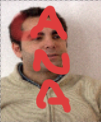
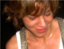
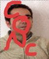

|
Alonso González Miranda
Licenciado en Psicología. Colegiado num M-21562. Formación en Gerapia Gestalt. Grupo 4. Miembro de la Asociación Althea Desarrollo Humano. Profesor Colaborador de la Univerdidad Pablo Olávide Sevilla. Psicoterapeuta infantil, familia, pareja y grupos. |
|
|
Ana González Tejera
Terapeuta Gestalt, Educadora Social, 17 años de experiencia en Intervención Psicosocial, Coach Personal, Formadora de formadores, Formación en Psicología y Psicopedagogía por la UNED, Experta en Psicología Infantil y Adolescente. Miembro del Equipo Althea. Facilitadora de grupos humanos y procesos personales. |
 |
|
Carmen Quidim
11111111111DESCRIPCIÓN CarmenDESCRIPCIÓN DESCRIPCIÓNTerapeuta Gestalt (miembro de la AETG). Educadora Social con amplia experiencia en Intervención Psicosocial, Formada en Psicología (UNED), Psicopedagogía (UNED), Experta en Psicología Infantil y Adolescente, Meditación Vipassana, Coaching Personal. Formadora de Formadores, Facilitadora de grupos de Crecimiento y Autoconocimiento. |
 |
|
Concha Velasco
22222222222222DESCRIPCIÓN ConchaDESCRIPCIÓN Terapeuta Gestalt (miembro de la AETG). Educadora Social con amplia experiencia en Intervención Psicosocial, Formada en Psicología (UNED), Psicopedagogía (UNED), Experta en Psicología Infantil y Adolescente, Meditación Vipassana, Coaching Personal. Formadora de Formadores, Facilitadora de grupos de Crecimiento y Autoconocimiento. |
 |